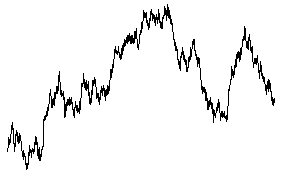

| From this 2000 point graph of Brownian motion
|
|  |
| on the left is the graph of the increments Y(t + 10) - Y(t).
We say this is an increment with delay = 10.
Compare this
with the right graph, the increments Y(t + 50) - Y(t), plotted to the same scale. |
|
| To compare the distributions of these increments, divide
the range of the increments into 100 bins and plot the histograms of the
number of increments in each bin. |
| On the left is the histogram of the
delay = 10 increments, right is the histogram of the delay = 50 increments. |
|
| Both are approximately normal. |
| The second is wider than the first, in fact, its standard deviation is about
2.25 times that of the first. |
| Note 2.25 is close to √5. |